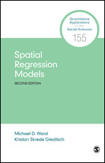

if(!("remotes" %in% installed.packages()[,1])) install.packages("remotes", dependencies = TRUE)
if(!("ggsflabel" %in% installed.packages()[,1])) remotes::install_github("yutannihilation/ggsflabel")
require(sf)
require(tidyverse)
require(ggplot2)
require(ggsflabel)
if(!file.exists("covid.geojson")) download.file("https://github.com/profrichharris/profrichharris.github.io/raw/main/MandM/data/covid.geojson",
"covid.geojson", mode = "wb", quiet = TRUE)
read_sf("covid.geojson") |>
filter(regionName == "North West") ->
covidSpatial Regression
Introduction
In the previous session we looked at geographically weighted statistics, including geographically weighted correlation, which examines whether the correlation between two variables varies across a map. In this session we extend from correlation to looking at regression modelling with a spatial component (spatial regression). The data we shall use are a map of the rate of COVID-19 infections per thousand population in neighbourhoods of the North West of England over the period from the week commencing 2020-03-07 to the week commencing 2022-04-16. That rate is calculated as the total number of reported infections per neighbourhood, divided by the mid-2020 ONS estimated population. There are three problems with these data, which originate (prior to adjustment) from https://coronavirus.data.gov.uk/details/download:
- The rate, as calculated, does not allow for re-infection (i.e. the same person can catch COVID-19 more than once).
- Not everyone who had COVID was tested for a positive diagnosis. Limitations in the testing regime are described in this paper and are most severe earlier in the pandemic and again towards the end of the data period when testing was scaled-back and then largely withdrawn.
- For data protection reasons, where a neighbourhood had less than three cases in a week, that number was reported as zero even though it could really be one or two. This undercount adds up, although, unsurprisingly it affects the largest cities most (because they have more neighbourhoods to be undercounted) in weeks when COVID is not especially prevalent (because in other weeks there are more often more than two cases per neighbourhoods). An adjustment has been made to the data to allow for this censoring of the data but not for the undercount caused by not testing positive.
Despite their shortcomings, the data are sufficient to illustrate the methods, below.
Getting Started
The data are downloaded as follows. The required packages should be installed already, from previous sessions. As before, you may wish to begin by opening the R Project that you created for these classes.
Looking at a map of the COVID-19 rates, it appears that there are patches of higher rates that tend to cluster in cities such as Preston, Manchester and Liverpool, although not exclusively so.

Don’t forget that you can, if you wish, use the cols4all and it’s functions, e.g. scale_fill_continuous_c4a_seq() instead of scale_fill_distiller() in the code chunk below.
covid |>
filter(Rate > 400) |>
select(LtlaName) |> # LtlaName is the name of the local authority
filter(!duplicated(LtlaName)) ->
high_rate
ggplot() +
geom_sf(data = covid, aes(fill = Rate), size = 0.25) +
scale_fill_distiller(palette = "YlOrRd", direction = 1) +
geom_sf_label_repel(data = high_rate, aes(label = LtlaName), size = 3,
alpha = 0.5) +
theme_void()
… and not without variation within the cities such as Manchester:
ggplot(data = covid |> filter(LtlaName == "Manchester")) +
geom_sf(aes(fill = Rate), size = 0.25) +
scale_fill_distiller(palette = "YlOrRd", direction = 1) +
theme_void()
Across the map there appears to be a pattern of positive spatial autocorrelation in the COVID-19 rates of contiguous neighbours, whether this is measured using a Moran test,
require(spdep)
spweight <- nb2listw(poly2nb(covid, snap = 1))
moran.test(covid$Rate, spweight)
Moran I test under randomisation
data: covid$Rate
weights: spweight
Moran I statistic standard deviate = 24.422, p-value < 2.2e-16
alternative hypothesis: greater
sample estimates:
Moran I statistic Expectation Variance
0.4919206758 -0.0010834236 0.0004075223 or using the Pearson correlation,
cor(lag.listw(spweight, covid$Rate), covid$Rate)[1] 0.6726405Some of the ‘hot spots’ of infection are suggested using the geographically-weighted means,
require(GWmodel)
covid_sp <- as_Spatial(covid)
bw <- bw.gwr(Rate ~ 1, data = covid_sp,
adaptive = TRUE, kernel = "bisquare", longlat = F)
gwstats <- gwss(covid_sp, vars = "Rate", bw = bw, kernel = "bisquare",
adaptive = TRUE, longlat = F)Plotting these,
covid$Rate_LM <- gwstats$SDF$Rate_LM
ggplot(covid, aes(fill = Rate_LM)) +
geom_sf(size = 0.25) +
scale_fill_distiller(palette = "YlOrRd", direction = 1) +
theme_void()
They also are suggested using the G-statistic with a somewhat arbitrary bandwidth of 5km.
coords <- st_centroid(covid, of_largest_polygon = TRUE)
neighbours <- dnearneigh(coords, 0, 5000)
spweightB <- nb2listw(neighbours, style = "B", zero.policy = TRUE)
covid$localG <- localG(covid$Rate, spweightB)
brks <- c(min(covid$localG, na.rm = TRUE),
-3.29, -2.58, -1.96, 1.96, 2.58, 3.29,
max(covid$localG, na.rm = TRUE))
covid$localG_gp <- cut(covid$localG, brks, include.lowest = TRUE)
pal <- c("purple", "dark blue", "light blue", "light grey",
"yellow", "orange", "red")
ggplot(covid, aes(fill = localG_gp)) +
geom_sf(size = 0.25) +
scale_fill_manual("G", values = pal, na.value = "white",
na.translate = F) +
theme_void() +
guides(fill = guide_legend(reverse = TRUE))
An initial model to explain the spatial patterns in the COVID-19 rates
It is likely that the spatial variation in the COVID-19 rates is due to differences in the physical attributes of the different neighbourhoods and/or of the populations who live in them. For example, the rates may be related to the relative level of deprivation in the neighbourhoods (the Index of Multiple Deprivation, IMD), the age composition of their populations (e.g. percentage aged 0 to 11, age0.11), the population density (density), the number of carehome beds (carebeds, because particularly early on in the pandemic, carehome residents were at very high risk), and whether they contain an Accident and Emergency hospital (AandE, coded 1 if they do and 0 if they don’t). Incorporating this into a standard regression model gives,
ols1 <- lm(Rate ~ IMD + age0.11 + age12.17 + age18.24 + age25.34 + age35.39 +
age50.59 + age60.69 + age70plus + density +
carebeds + AandE, data = covid)
summary(ols1)
Call:
lm(formula = Rate ~ IMD + age0.11 + age12.17 + age18.24 + age25.34 +
age35.39 + age50.59 + age60.69 + age70plus + density + carebeds +
AandE, data = covid)
Residuals:
Min 1Q Median 3Q Max
-134.816 -17.761 1.592 20.124 139.444
Coefficients:
Estimate Std. Error t value Pr(>|t|)
(Intercept) 182.26850 113.79175 1.602 0.109553
IMD -0.29381 0.10610 -2.769 0.005736 **
age0.11 2.21553 1.36681 1.621 0.105376
age12.17 -2.36944 1.94032 -1.221 0.222341
age18.24 -0.16683 1.16041 -0.144 0.885719
age25.34 2.31424 1.19221 1.941 0.052550 .
age35.39 6.65665 2.65716 2.505 0.012413 *
age50.59 6.31033 1.74161 3.623 0.000307 ***
age60.69 0.34605 1.46550 0.236 0.813386
age70plus -0.71097 1.23595 -0.575 0.565269
density 164.39302 636.21170 0.258 0.796162
carebeds 0.03583 0.01489 2.407 0.016292 *
AandE 1.13369 4.03313 0.281 0.778703
---
Signif. codes: 0 '***' 0.001 '**' 0.01 '*' 0.05 '.' 0.1 ' ' 1
Residual standard error: 31.75 on 911 degrees of freedom
Multiple R-squared: 0.2039, Adjusted R-squared: 0.1934
F-statistic: 19.44 on 12 and 911 DF, p-value: < 2.2e-16
which, as its R-squared value of 0.204 suggests, goes some way to explaining the variation in the rates. Note that you can tidier output for some models using tidyvere’s broom package and functions.
require(broom)
tidy(ols1)# A tibble: 13 × 5
term estimate std.error statistic p.value
<chr> <dbl> <dbl> <dbl> <dbl>
1 (Intercept) 182. 114. 1.60 0.110
2 IMD -0.294 0.106 -2.77 0.00574
3 age0.11 2.22 1.37 1.62 0.105
4 age12.17 -2.37 1.94 -1.22 0.222
5 age18.24 -0.167 1.16 -0.144 0.886
6 age25.34 2.31 1.19 1.94 0.0525
7 age35.39 6.66 2.66 2.51 0.0124
8 age50.59 6.31 1.74 3.62 0.000307
9 age60.69 0.346 1.47 0.236 0.813
10 age70plus -0.711 1.24 -0.575 0.565
11 density 164. 636. 0.258 0.796
12 carebeds 0.0358 0.0149 2.41 0.0163
13 AandE 1.13 4.03 0.281 0.779 glance(ols1)# A tibble: 1 × 12
r.squared adj.r.squared sigma statistic p.value df logLik AIC BIC
<dbl> <dbl> <dbl> <dbl> <dbl> <dbl> <dbl> <dbl> <dbl>
1 0.204 0.193 31.7 19.4 4.88e-38 12 -4500. 9027. 9095.
# … with 3 more variables: deviance <dbl>, df.residual <int>, nobs <int>Looking at R’s standard diagnostic plots there is not any strong evidence that the standard ]residual Normality assumption](https://thestatsgeek.com/2013/08/07/assumptions-for-linear-regression/){target=“_blank”} of the regression statistics is being violated although, not very surprisingly, the variance inflation values (VIF) do suggest high levels of colinearity between the age variables.
par(mfrow = c(2,2))
plot(ols1)
if(!("car" %in% installed.packages()[,1])) install.packages("car")
require(car)
vif(ols1) IMD age0.11 age12.17 age18.24 age25.34 age35.39 age50.59 age60.69
2.834069 18.836543 6.050232 38.347245 27.513979 10.228388 16.430177 14.397087
age70plus density carebeds AandE
38.881759 2.123517 1.135127 1.030432
There are no hard and fast rules but, in broad terms, a VIF value of 4 or 5 or above is worth considering as a potential issue and a value above 10 suggests a very high level of multicollinearity. The simple solution to the issue is to drop some of the colinear variables but not all: if X1 and X2 are highly correlated, you only need to consider dropping X1 or X2, not both.
Although I am generally cautious about automated selection procedures, in this case a stepwise model selection appears useful to address the colinearity:
ols2 <- step(ols1)The results are,
tidy(ols2)# A tibble: 7 × 5
term estimate std.error statistic p.value
<chr> <dbl> <dbl> <dbl> <dbl>
1 (Intercept) 147. 14.4 10.3 1.96e-23
2 IMD -0.260 0.0941 -2.76 5.90e- 3
3 age0.11 1.81 0.532 3.40 6.95e- 4
4 age25.34 2.91 0.476 6.11 1.48e- 9
5 age35.39 7.28 1.54 4.74 2.48e- 6
6 age50.59 6.66 0.638 10.4 3.60e-24
7 carebeds 0.0333 0.0142 2.35 1.91e- 2glance(ols2)# A tibble: 1 × 12
r.squared adj.r.squared sigma statistic p.value df logLik AIC BIC
<dbl> <dbl> <dbl> <dbl> <dbl> <dbl> <dbl> <dbl> <dbl>
1 0.201 0.196 31.7 38.5 8.36e-42 6 -4501. 9018. 9057.
# … with 3 more variables: deviance <dbl>, df.residual <int>, nobs <int>vif(ols2) IMD age0.11 age25.34 age35.39 age50.59 carebeds
2.236588 2.865175 4.394042 3.425196 2.212515 1.031632 An analysis of variance (ANOVA) shows there is no statistically gain in using the model with more variables (ols1) so we can prefer the simpler (ols2).
anova(ols2, ols1)Analysis of Variance Table
Model 1: Rate ~ IMD + age0.11 + age25.34 + age35.39 + age50.59 + carebeds
Model 2: Rate ~ IMD + age0.11 + age12.17 + age18.24 + age25.34 + age35.39 +
age50.59 + age60.69 + age70plus + density + carebeds + AandE
Res.Df RSS Df Sum of Sq F Pr(>F)
1 917 921337
2 911 918176 6 3161.6 0.5228 0.7913Looking again at the model (tidy(ols2)), it may seem surprising that the deprivation index is negatively correlated with the COVID rate – implying more deprivation, fewer infections (geographies of health often work in the opposite direction; being poorer can come with a ‘health premium’) – but this is due to the later variants of the disease that spread quickly through more affluent populations when restrictions on mobility and social interaction have been relaxed.
Spatial dependencies in the model residuals
Although the model appears to fit the data reasonably well, there is a problem. The residuals – the differences between what the model predicts as the COVID-19 rate at each location and what those rates actually are – are supposed to be random noise, meaning their values should be independent of their location and of each other, with no spatial structure. They are not. In fact, if we apply a Moran’s test to the residuals, using the test for regression residuals, lm.morantest(), we find that they are significantly spatially correlated:
lm.morantest(ols2, spweight)
Global Moran I for regression residuals
data:
model: lm(formula = Rate ~ IMD + age0.11 + age25.34 + age35.39 +
age50.59 + carebeds, data = covid)
weights: spweight
Moran I statistic standard deviate = 22.357, p-value < 2.2e-16
alternative hypothesis: greater
sample estimates:
Observed Moran I Expectation Variance
0.4461249282 -0.0033794098 0.0004042296
The pattern is evident if we map the standardised residuals from the function rstandard(). At the risk of geographic over-simplification, there is something of a north-south divide, with a patch of negative residuals to the north of the study region. These are rural neighbouhoods where the model is under-predicting the rate of COVID-19 cases.
covid$resids <- rstandard(ols2)
brks <- c(min(covid$resids), -3.29, -2.58, -1.96, 1.96, 2.58, 3.29,
max(covid$resids))
covid$resids_gp <- cut(covid$resids, brks, include.lowest = TRUE)
pal <- c("purple", "dark blue", "light blue", "light grey", "yellow", "orange", "red")
ggplot(covid, aes(fill = resids_gp)) +
geom_sf(size = 0.25) +
scale_fill_manual("Standardised residual", values = pal) +
theme_void() +
guides(fill = guide_legend(reverse = TRUE))
Looking again at the model
It is possible that the spatial structure in the residuals exists because the model has been mis-specified. In particular, we might wonder if it was a mistake to drop the population density variable which perhaps had a polynomial (non-linear) relationship with the COVID rates. Let’s find out.
ols3 <- update(ols2, . ~ . + poly(density, 2))
Certainly, of the three models, this is the best fit to the data, as we can see from the various model fit diagnostics that are easily gathered together using the glance() function. Note the highest, adjusted r-squared value and lowest AIC value, for example.
bind_rows(glance(ols1), glance(ols2), glance(ols3))# A tibble: 3 × 12
r.squared adj.r.squared sigma statistic p.value df logLik AIC BIC
<dbl> <dbl> <dbl> <dbl> <dbl> <dbl> <dbl> <dbl> <dbl>
1 0.204 0.193 31.7 19.4 4.88e-38 12 -4500. 9027. 9095.
2 0.201 0.196 31.7 38.5 8.36e-42 6 -4501. 9018. 9057.
3 0.248 0.241 30.8 37.7 5.93e-52 8 -4473. 8966. 9015.
# … with 3 more variables: deviance <dbl>, df.residual <int>, nobs <int>An analysis of variance also suggests that the model fit has improved significantly.
anova(ols2, ols3)Analysis of Variance Table
Model 1: Rate ~ IMD + age0.11 + age25.34 + age35.39 + age50.59 + carebeds
Model 2: Rate ~ IMD + age0.11 + age25.34 + age35.39 + age50.59 + carebeds +
poly(density, 2)
Res.Df RSS Df Sum of Sq F Pr(>F)
1 917 921337
2 915 867305 2 54032 28.502 9.819e-13 ***
---
Signif. codes: 0 '***' 0.001 '**' 0.01 '*' 0.05 '.' 0.1 ' ' 1However, there is still spatial autocorrelation left in the model residuals, albeit slightly reduced from before.
lm.morantest(ols2, spweight)$estimateObserved Moran I Expectation Variance
0.4461249282 -0.0033794098 0.0004042296 lm.morantest(ols3, spweight)$estimateObserved Moran I Expectation Variance
0.4133475904 -0.0037610429 0.0004036032 The map of the residuals now looks like:
covid$resids <- rstandard(ols3)
brks <- c(min(covid$resids), -3.29, -2.58, -1.96, 1.96, 2.58, 3.29,
max(covid$resids))
covid$resids_gp <- cut(covid$resids, brks, include.lowest = TRUE)
pal <- c("purple", "dark blue", "light blue", "light grey", "yellow", "orange", "red")
ggplot(covid, aes(fill = resids_gp)) +
geom_sf(size = 0.25) +
scale_fill_manual("Standardised residual", values = pal) +
theme_void() +
guides(fill = guide_legend(reverse = TRUE))
Spatial regression models
Spatial error model
One way to handle the error structure is to fit a spatial simultaneous autoregressive error model which decomposes the error (the residuals) into two parts: a spatially lagged component (the bit that allows for geographical clustering in the residuals) and a remaining error: \(y = X\beta + \lambda W \xi + \epsilon\). The model can be fitted using R’s spatialreg package.
if(!("spatialreg" %in% installed.packages()[,1])) install.packages("spatialreg", dependencies = TRUE)
require(spatialreg)
errmod <- errorsarlm(formula(ols3), data = covid, listw = spweight)
summary(errmod)
Call:errorsarlm(formula = formula(ols3), data = covid, listw = spweight)
Residuals:
Min 1Q Median 3Q Max
-88.9057 -13.5631 1.0775 15.1597 108.7168
Type: error
Coefficients: (asymptotic standard errors)
Estimate Std. Error z value Pr(>|z|)
(Intercept) 228.423031 13.194612 17.3118 < 2.2e-16
IMD -0.595479 0.089535 -6.6508 2.915e-11
age0.11 1.885127 0.449453 4.1943 2.738e-05
age25.34 2.612570 0.416075 6.2791 3.406e-10
age35.39 3.729976 1.369957 2.7227 0.006475
age50.59 3.339294 0.608468 5.4880 4.064e-08
carebeds 0.051339 0.010181 5.0426 4.592e-07
poly(density, 2)1 -111.989485 38.123934 -2.9375 0.003309
poly(density, 2)2 -120.005334 28.931983 -4.1478 3.356e-05
Lambda: 0.69751, LR test value: 348.94, p-value: < 2.22e-16
Asymptotic standard error: 0.028893
z-value: 24.142, p-value: < 2.22e-16
Wald statistic: 582.82, p-value: < 2.22e-16
Log likelihood: -4298.755 for error model
ML residual variance (sigma squared): 572.93, (sigma: 23.936)
Number of observations: 924
Number of parameters estimated: 11
AIC: 8619.5, (AIC for lm: 8966.5)The spatial component, \(\lambda\), the spatial autocorrelation in the residuals, is significant as a number of test statistics that are with it in the summary above show. What it confirms is what we could interpret from the earlier Moran’s test of the regression residuals: having allowed for the variables that help to predict the COVID-rates there is still an unexplained geographic pattern whereby places for which the model over-predict the rate tend to be surrounded by other places where it does the same, and places where it under-predicts are surrounded by other under-predictions. The spatial error model gives a better fit to the data than the standard regression, as the following diagnostics tell us (the lower the AIC the better)
glance(ols3)$r.squared[1] 0.2479886glance(errmod)$r.squared[1] 0.5543411AIC(ols3)[1] 8966.455AIC(errmod)[1] 8619.511The differences are such that there is little doubt that the error model offers a much improved fit but if we do wish to test that difference statistically then
logLik(ols3)'log Lik.' -4473.228 (df=10)logLik(errmod)'log Lik.' -4298.755 (df=11)degf <- attr(logLik(errmod), "df") - attr(logLik(ols3), "df")
LR <- -2 * (logLik(ols3) - logLik(errmod))
LR > qchisq(0.99, degf)[1] TRUEUsing the error model changes the estimates of the regression coefficients.
tidy(ols3)# A tibble: 9 × 5
term estimate std.error statistic p.value
<chr> <dbl> <dbl> <dbl> <dbl>
1 (Intercept) 185. 15.2 12.2 7.36e-32
2 IMD -0.338 0.0941 -3.59 3.45e- 4
3 age0.11 1.51 0.519 2.92 3.61e- 3
4 age25.34 3.15 0.464 6.80 1.87e-11
5 age35.39 3.96 1.56 2.55 1.11e- 2
6 age50.59 5.67 0.696 8.15 1.15e-15
7 carebeds 0.0290 0.0138 2.10 3.56e- 2
8 poly(density, 2)1 23.8 43.1 0.553 5.81e- 1
9 poly(density, 2)2 -267. 35.5 -7.54 1.11e-13tidy(errmod)# A tibble: 10 × 5
term estimate std.error statistic p.value
<chr> <dbl> <dbl> <dbl> <dbl>
1 (Intercept) 228. 13.2 17.3 0
2 IMD -0.595 0.0895 -6.65 2.91e-11
3 age0.11 1.89 0.449 4.19 2.74e- 5
4 age25.34 2.61 0.416 6.28 3.41e-10
5 age35.39 3.73 1.37 2.72 6.48e- 3
6 age50.59 3.34 0.608 5.49 4.06e- 8
7 carebeds 0.0513 0.0102 5.04 4.59e- 7
8 poly(density, 2)1 -112. 38.1 -2.94 3.31e- 3
9 poly(density, 2)2 -120. 28.9 -4.15 3.36e- 5
10 lambda 0.698 0.0289 24.1 0 For example, where the estimate for age50.59, which is the estimate of the effect size, used to be 5.67, now it is 3.34. The 95% confidence intervals for those and the other coefficient estimates change too:
confint(ols3) 2.5 % 97.5 %
(Intercept) 1.555316e+02 215.12202256
IMD -5.225593e-01 -0.15331307
age0.11 4.956890e-01 2.53253071
age25.34 2.244363e+00 4.06480619
age35.39 9.064758e-01 7.01079426
age50.59 4.308470e+00 7.03988250
carebeds 1.958051e-03 0.05604307
poly(density, 2)1 -6.079177e+01 108.44040596
poly(density, 2)2 -3.369641e+02 -197.81320842confint(errmod) 2.5 % 97.5 %
lambda 0.64088619 0.75414281
(Intercept) 202.56206649 254.28399509
IMD -0.77096349 -0.41999361
age0.11 1.00421453 2.76603896
age25.34 1.79707796 3.42806128
age35.39 1.04490945 6.41504355
age50.59 2.14672005 4.53186895
carebeds 0.03138441 0.07129323
poly(density, 2)1 -186.71102210 -37.26794826
poly(density, 2)2 -176.71097755 -63.29968970Spatially lagged y model
Although the spatial error model fits the data better than the standard regression model, it tells us only that there is an unexplained spatial structure to the residuals, not what caused it. It may offer better estimates of the model parameters and their statistical significance but it does not presuppose any particular spatial process generating the patterns in the values. A different model that explicitly tests for whether the value at a location is functionally dependent on the values of neighbouring location is the spatially lagged y model: \(y = \rho Wy + X\beta + \epsilon\). It models an ‘overspill’ or chain effect where the outcome (the Y value) at any location is affected by the outcomes at surrounding locations.
lagmod <- lagsarlm(formula(ols3), data = covid, listw = spweight)
summary(lagmod)
Call:lagsarlm(formula = formula(ols3), data = covid, listw = spweight)
Residuals:
Min 1Q Median 3Q Max
-98.8140 -14.8770 1.0467 14.7420 110.1081
Type: lag
Coefficients: (asymptotic standard errors)
Estimate Std. Error z value Pr(>|z|)
(Intercept) 17.353050 14.403449 1.2048 0.2282866
IMD -0.371501 0.074903 -4.9598 7.057e-07
age0.11 1.377790 0.411239 3.3503 0.0008071
age25.34 2.678105 0.367344 7.2905 3.089e-13
age35.39 1.885234 1.235376 1.5260 0.1269996
age50.59 3.636195 0.553621 6.5680 5.099e-11
carebeds 0.042747 0.010887 3.9264 8.623e-05
poly(density, 2)1 -69.714325 34.062239 -2.0467 0.0406900
poly(density, 2)2 -156.910145 28.073145 -5.5893 2.279e-08
Rho: 0.63167, LR test value: 342.73, p-value: < 2.22e-16
Asymptotic standard error: 0.02966
z-value: 21.297, p-value: < 2.22e-16
Wald statistic: 453.57, p-value: < 2.22e-16
Log likelihood: -4301.863 for lag model
ML residual variance (sigma squared): 591.59, (sigma: 24.323)
Number of observations: 924
Number of parameters estimated: 11
AIC: 8625.7, (AIC for lm: 8966.5)
LM test for residual autocorrelation
test value: 3.5747, p-value: 0.058666Its test for residual autocorrelation does not generate a statistically significant result at a 95% level, meaning there is no statistically significant spatial structure now left in the residuals, although it is close.
Note that the beta estimates of the lagged y-model cannot be interpreted in the same way as for a standard regression model. For example, the beta estimate of -0.372 for the IMD variable does not mean that if (hypothetically) we increased that variable by one unit at each location we should then expect the COVID-19 to everywhere decrease by 0.372 holding the other X variables constant. That is the correct interpretation for a standard (OLS) regression model and also for the spatial error model but not for where the lag of the Y variable is included as a predictor variable. The reason is because if we did raise the IMD value it would start something akin to a ‘chain reaction’ through the feedback of Y via the lagged Y values: the (hypothetical) increase in deprivation at the one location, decreases the COVID-19 rate at neighbouring locations, which decrease the rate at their neighbours and so forth. The total impact is a sum of the direct effect – that predicted to happen through the 1 unit change in IMD – and the indirect effect, which is that caused by ‘the chain reaction’ / feedback / ‘overspill’ in the system:
impacts(lagmod, listw = spweight)Impact measures (lag, exact):
Direct Indirect Total
IMD -0.4123766 -0.5962428 -1.008619
age0.11 1.5293852 2.2112917 3.740677
age25.34 2.9727718 4.2982407 7.271013
age35.39 2.0926626 3.0257175 5.118380
age50.59 4.0362780 5.8359322 9.872210
carebeds 0.0474502 0.0686068 0.116057
poly(density, 2)1 -77.3848558 -111.8884195 -189.273275
poly(density, 2)2 -174.1746600 -251.8338663 -426.008526Although it wasn’t especially noticeable, there was a short pause as those impacts were calculated. The calculations could take much longer if the size of the spatial weights matrix was larger. As this author notes, after Lesage and Pace, 2009, a faster approximation method can be used, here with R = 1000 simulated distributions for the impact measures.
W <- as(spweight, "CsparseMatrix")
trMC <- trW(W, type = "MC")
im <-summary(impacts(lagmod, tr = trMC, R = 1000), zstats = TRUE)
data.frame(im$res, row.names = names(lagmod$coefficients)[-1]) direct indirect total
IMD -0.41217413 -0.59644414 -1.0086183
age0.11 1.52863446 2.21203856 3.7406730
age25.34 2.97131258 4.29969241 7.2710050
age35.39 2.09163539 3.02673938 5.1183748
age50.59 4.03429679 5.83790323 9.8722000
carebeds 0.04742691 0.06862998 0.1160569
poly(density, 2)1 -77.34687053 -111.92620885 -189.2730794
poly(density, 2)2 -174.08916443 -251.91892111 -426.0080855 # The [-1] is to omit the interceptAn advantage of this approach is that we can also obtain z and p-values for the impact measures; i.e. measures of statistical significance.
data.frame(im$zmat, row.names = names(lagmod$coefficients)[-1]) Direct Indirect Total
IMD -5.009567 -4.384977 -4.783372
age0.11 3.407586 3.189026 3.335795
age25.34 7.188060 5.416559 6.350412
age35.39 1.581328 1.559155 1.576863
age50.59 6.469422 5.231091 5.967869
carebeds 3.896181 3.488718 3.724252
poly(density, 2)1 -2.068516 -1.982364 -2.032422
poly(density, 2)2 -5.514659 -4.560168 -5.092320data.frame(im$pzmat, row.names = names(lagmod$coefficients)[-1]) Direct Indirect Total
IMD 5.455269e-07 1.159982e-05 1.723790e-06
age0.11 6.554031e-04 1.427532e-03 8.505571e-04
age25.34 6.572520e-13 6.075694e-08 2.147396e-10
age35.39 1.138030e-01 1.189597e-01 1.148270e-01
age50.59 9.837842e-11 1.685127e-07 2.403716e-09
carebeds 9.772117e-05 4.853426e-04 1.958949e-04
poly(density, 2)1 3.859154e-02 4.743853e-02 4.211099e-02
poly(density, 2)2 3.494575e-08 5.111269e-06 3.537078e-07Most but not all of the impacts are significant at, say, a 95% confidence (i.e p < 0.05). We can drop age35.39 from the model with little loss of fit.
lagmod2 <- lagsarlm(Rate ~ IMD + age0.11 + age25.34 + age50.59 + carebeds +
poly(density, 2), data = covid, listw = spweight)
anova(lagmod, lagmod2) Model df AIC logLik Test L.Ratio p-value
lagmod 1 11 8625.7 -4301.9 1
lagmod2 2 10 8626.1 -4303.0 2 2.3408 0.12602bind_rows(glance(lagmod), glance(lagmod2))# A tibble: 2 × 6
r.squared AIC BIC deviance logLik nobs
<dbl> <dbl> <dbl> <dbl> <dbl> <int>
1 0.532 8626. 8679. 546629. -4302. 924
2 0.532 8626. 8674. 547460. -4303. 924
In fact, an increase of 1 unit in, for example, the IMD variable, will play out slightly differently in different places because they have different neighbours with different Y values and are at different distances from each other. The code below, which is from the first edition of Ward & Gleditsch (2008, pp.47), will calculate the impact (of a one unit change in IMD) at each location but below I have limited it to the first ten so that it doesn’t take too long to run.
n <- nrow(covid)
I <- matrix(0, nrow = n, ncol = n)
diag(I) <- 1
rho <- lagmod$rho
beta <- lagmod$coefficients["age25.34"]
weights.matrix <- listw2mat(spweight)
results <- rep(NA, times=10)
results <- sapply(1:10, \(i) {
xvector <- rep(0, times=n)
xvector[i] <- 1
impact <- solve(I - rho * weights.matrix) %*% xvector * beta
results[i] <- impact[i]
})
results [1] 2.953840 2.973231 2.949515 2.908907 3.025483 2.901597 2.949316 2.960332
[9] 2.949171 2.946591Choosing between the spatial error and lagged y model
Before fitting the spatial error and lagged y models, we could have looked for evidence in support of them using the function lm.LMtests(). This tests the basic OLS specification against the more general spatial error and lagged y models. Anselin and Rey (2014, p.110) offer the following decision tree that can, in the absence of a more theoretical basis for the model choice (e.g. the type of process being modelled), be used in conjunction with the test results to help select the model.

Source: Modern Spatial Econometrics in Practice
In the first step, we find that in this instance both the LM-Error and LM-Lag tests are significant.
ols4 <- lm(Rate ~ IMD + age0.11 + age25.34 + age50.59 + carebeds + poly(density, 2), data = covid)
lm.LMtests(ols4, spweight, test=c("LMerr", "LMlag"))
Lagrange multiplier diagnostics for spatial dependence
data:
model: lm(formula = Rate ~ IMD + age0.11 + age25.34 + age50.59 +
carebeds + poly(density, 2), data = covid)
weights: spweight
LMerr = 411.48, df = 1, p-value < 2.2e-16
Lagrange multiplier diagnostics for spatial dependence
data:
model: lm(formula = Rate ~ IMD + age0.11 + age25.34 + age50.59 +
carebeds + poly(density, 2), data = covid)
weights: spweight
LMlag = 463.85, df = 1, p-value < 2.2e-16Moving on to the robust tests, only the LM-Lag test is significant. Given the nature of COVID-19 as an infectious disease, it does seem reasonable to suppose that high rates of infection in any an area will ‘overspill’ into neighbouring areas too.
lm.LMtests(ols4, spweight, test=c("RLMerr", "RLMlag"))
Lagrange multiplier diagnostics for spatial dependence
data:
model: lm(formula = Rate ~ IMD + age0.11 + age25.34 + age50.59 +
carebeds + poly(density, 2), data = covid)
weights: spweight
RLMerr = 2.3319, df = 1, p-value = 0.1267
Lagrange multiplier diagnostics for spatial dependence
data:
model: lm(formula = Rate ~ IMD + age0.11 + age25.34 + age50.59 +
carebeds + poly(density, 2), data = covid)
weights: spweight
RLMlag = 54.693, df = 1, p-value = 1.409e-13A geographically weighted spatial weights matrix
As with the tests of spatial autocorrelation in an earlier session and as with the geographically weighted statistics, the results of the spatial regression models are dependent on the specification of the spatial weights matrix which can suffer from being somewhat arbitrary. We could, if we wish, try calibrating it around the geographically weighted mean.
require(GWmodel)
bw <- bw.gwr(Rate ~ 1, data = covid_sp, adaptive = TRUE, kernel = "bisquare")To now create the corresponding inverse distance spatial weights matrix for the models, we can use the nn2 function in the RANN package to find the $bw = $ 18 nearest neighbours to each centroid point:
if(!("RANN" %in% installed.packages()[,1])) install.packages("RANN")
require(RANN)
coords <- st_coordinates(st_centroid(st_geometry(covid)))
knn <- nn2(coords, coords, k = bw)Having done so, those neighbours can be geographically weighted using a bisquare kernel, as in the GWR calibration above. (A Gaussian kernel is obtained if (1 - (x / max(x))^2)^2 is replaced by exp(-0.5 * (x / max(x))^2) in the code below).
d <- knn$nn.dists
glist <- apply(d, 1, \(x) {
(1 - (x / max(x))^2)^2
}, simplify = FALSE)
knearnb <- knn2nb(knearneigh(st_centroid(st_geometry(covid)), k = bw))
spweightK <- nb2listw(knearnb, glist, style = "C")The results are not very successful though. The lag model with contiguous spatial weights fits the data better,
lagmod3 <- lagsarlm(formula(ols4), data = covid, listw = spweightK)
bind_rows(glance(lagmod2), glance(lagmod3))# A tibble: 2 × 6
r.squared AIC BIC deviance logLik nobs
<dbl> <dbl> <dbl> <dbl> <dbl> <int>
1 0.532 8626. 8674. 547460. -4303. 924
2 0.254 8959. 9008. 860562. -4470. 924In addition, the inverse distance weights are not row-standardised, which may cause some knock-on problems. They could become row-standardised (spweightK <- nb2listw(knearnb, glist, style = "W")) but if they are, by re-scaling each row of the weights to equal one, then the inverse distance weighting is altered.
Geographically Weighted Regression
The following charts shows the simple, bivariate regression relationship between Rate and age0.11.
ggplot(covid, aes(x = age0.11, y = Rate)) +
geom_point() +
geom_smooth(method = "lm", se = FALSE)
Intriguingly, it doesn’t seem to be linear relationship but a polynomial one.
ggplot(covid, aes(x = age0.11, y = Rate)) +
geom_point() +
geom_smooth(method = "lm", se = FALSE, formula = y ~ poly(x, 2))
It could be that the relationship is indeed curved but it might also be that the nature of the relationship is spatially dependent – that the relationship between Rate and age0.11 depends upon where it is measured. A coplot() from R’s base graphics lends weight to the second idea: note how the regression relationship changes with X and Y, which are the centroids of the neighbourhoods in the North West of England.
coplot_df <- data.frame(st_coordinates(st_centroid(covid)), Rate = covid$Rate, age0.11 = covid$age0.11)
PointsWithLine = function(x, y, ...) {
points(x=x, y=y, pch=20, col="black")
abline(lm(y ~ x))
}
coplot(Rate ~ age0.11 | X * Y, data = coplot_df, panel = PointsWithLine, overlap = 0)
Imagine, now, that instead of dividing the geography of the North West’s neighbourhoods into a \(6 \times 6\) grid, as in the coplot, we instead go from location to location within the study region, calculating a geographically weighted regression at and around each one of them. This builds on the idea of geographically weighted statistics that allow the measured value of the statistic to vary locally from location to location across the study region; with geographically weighted it is the locally estimated regression coefficients that are allowed to vary. These are used to look for spatial variation in the regression relationships.
If the bandwidth is not known or there is no theoretical justification for it, it can be found using an automated selection procedure, here with a more complex model than the bivariate relationship shown in the coplot, instead using all the variables included in the choice between the spatial error and lagged y model, above.
require(GWmodel)
bw <- bw.gwr(formula(ols4), data = covid_sp, adaptive = TRUE)The model can then be fitted.
gwrmod <- gwr.basic(formula(ols4), data = covid_sp, adaptive = TRUE, bw = bw)
gwrmod ***********************************************************************
* Package GWmodel *
***********************************************************************
Program starts at: 2023-03-03 17:36:17
Call:
gwr.basic(formula = formula(ols4), data = covid_sp, bw = bw,
adaptive = TRUE)
Dependent (y) variable: Rate
Independent variables: IMD age0.11 age25.34 age50.59 carebeds density
Number of data points: 924
***********************************************************************
* Results of Global Regression *
***********************************************************************
Call:
lm(formula = formula, data = data)
Residuals:
Min 1Q Median 3Q Max
-123.194 -18.380 1.473 20.623 127.554
Coefficients:
Estimate Std. Error t value Pr(>|t|)
(Intercept) 188.50375 15.17560 12.422 < 2e-16 ***
IMD -0.39649 0.09149 -4.334 1.63e-05 ***
age0.11 2.30191 0.41777 5.510 4.66e-08 ***
age25.34 3.93517 0.34898 11.276 < 2e-16 ***
age50.59 5.80810 0.69596 8.345 2.59e-16 ***
carebeds 0.02904 0.01382 2.101 0.0359 *
poly(density, 2)1 29.14870 43.19300 0.675 0.4999
poly(density, 2)2 -292.74904 34.12420 -8.579 < 2e-16 ***
---Significance stars
Signif. codes: 0 '***' 0.001 '**' 0.01 '*' 0.05 '.' 0.1 ' ' 1
Residual standard error: 30.88 on 916 degrees of freedom
Multiple R-squared: 0.2427
Adjusted R-squared: 0.2369
F-statistic: 41.93 on 7 and 916 DF, p-value: < 2.2e-16
***Extra Diagnostic information
Residual sum of squares: 873446.4
Sigma(hat): 30.77887
AIC: 8970.975
AICc: 8971.172
BIC: 8151.892
***********************************************************************
* Results of Geographically Weighted Regression *
***********************************************************************
*********************Model calibration information*********************
Kernel function: bisquare
Adaptive bandwidth: 80 (number of nearest neighbours)
Regression points: the same locations as observations are used.
Distance metric: Euclidean distance metric is used.
****************Summary of GWR coefficient estimates:******************
Min. 1st Qu. Median 3rd Qu. Max.
Intercept -3.9934e+01 1.3693e+02 2.1422e+02 2.6180e+02 419.5064
IMD -2.7499e+00 -7.8059e-01 -4.4223e-01 -1.6702e-01 0.6501
age0.11 -4.0541e+00 2.3759e-01 3.4220e+00 6.1701e+00 12.5921
age25.34 -3.9387e+00 1.6469e+00 2.6274e+00 4.2843e+00 13.8157
age50.59 -9.5346e+00 2.1727e+00 5.3255e+00 8.6233e+00 14.3515
carebeds -5.6126e-02 2.5983e-02 5.8662e-02 8.7463e-02 0.2220
poly(density, 2)1 -2.7204e+03 -4.1814e+02 -1.5602e+02 4.1180e-01 667.9061
poly(density, 2)2 -2.1980e+03 -5.4619e+02 -2.5300e+02 -1.2247e+02 643.0451
************************Diagnostic information*************************
Number of data points: 924
Effective number of parameters (2trace(S) - trace(S'S)): 270.2441
Effective degrees of freedom (n-2trace(S) + trace(S'S)): 653.7559
AICc (GWR book, Fotheringham, et al. 2002, p. 61, eq 2.33): 8552.959
AIC (GWR book, Fotheringham, et al. 2002,GWR p. 96, eq. 4.22): 8216.682
BIC (GWR book, Fotheringham, et al. 2002,GWR p. 61, eq. 2.34): 8513.32
Residual sum of squares: 313860.8
R-square value: 0.7278617
Adjusted R-square value: 0.6151951
***********************************************************************
Program stops at: 2023-03-03 17:36:17 The output requires some interpretation! The results of the global regression are those obtained from a standard OLS regression (i.e. summary(lm(formula(ols4), data = covid_sp))). It is ‘global’ because it is a model for the entire study region, without spatial variation in the regression estimates. The results of the geographically weighted regression are the results from, in this case, 924 separate but spatially overlapping regression models fitted, with geographic weighting, to spatial subsets of the data. All the local estimates are contained in the spatial data frame, gwrmod$SDF, including those for age0.11 which are in gwrmod$SDF$age0.11 and have the following distribution,
summary(gwrmod$SDF$age0.11) Min. 1st Qu. Median Mean 3rd Qu. Max.
-4.0541 0.2376 3.4220 3.3645 6.1701 12.5921 This is the same summary of the distribution that is included in the GWR coefficient estimates. What it means is that in at least one location the relationship of age0.11 to Rate is, conditional on the other variables, negative. It is more usual for it to be positive – more children, more infections (perhaps a school effect?) – but the estimated effect size varies quite substantially across the locations in the study region. Its interquartile range is from 0.238 to 6.17. Mapping these local estimates reveals an interesting geography – it is largely in and around Manchester where a greater number of children of primary school age or younger appears to lower instead of raising the infection rate.
covid$age0.11GWR <- gwrmod$SDF$age0.11
ggplot(data = covid, aes(fill = age0.11GWR)) +
geom_sf(size = 0.25) +
scale_fill_gradient2("beta", mid = "grey90", trans = "reverse") +
theme_void() +
guides(fill = guide_colourbar(reverse = TRUE))
With a bit of effort we can get all the variables on the same chart…
if(!("gridExtra" %in% installed.packages()[,1])) install.packages("gridExtra",
dependencies = TRUE)
require(gridExtra)
g <- lapply(2:8, \(j) {
st_as_sf(gwrmod$SDF[, j]) %>%
rename(beta = 1) %>%
ggplot(aes(fill = beta)) +
geom_sf(col = NA) +
scale_fill_gradient2("beta", mid = "grey90", trans = "reverse") +
theme_void() +
guides(fill = guide_colourbar(reverse = TRUE)) +
ggtitle(names(gwrmod$SDF[j]))
})
grid.arrange(grobs = g)
… however, not all of these regression estimates are necessarily statistically significant. If we use the estimated t-values to isolate those that are not (t-values less than -1.96 or greater than +1.96 can be considered significant at a 95% confidence), then, for the age0.11 variable we obtain,
covid$age0.11GWR[abs(gwrmod$SDF$age0.11_TV) < 1.96] <- NA
ggplot(data = covid, aes(fill = age0.11GWR)) +
geom_sf(size = 0.25) +
scale_fill_gradient2("beta", mid = "grey90", na.value = "white",
trans = "reverse") +
theme_void() +
guides(fill = guide_colourbar(reverse = TRUE))
and, with a bit more data wrangling, for the full set,
sdf <- slot(gwrmod$SDF, "data")
g <- lapply(2:8, \(j) {
x <- st_as_sf(gwrmod$SDF[, j])
t <- which(names(sdf) == paste0(names(x)[1],"_TV"))
x[abs(sdf[, t]) < 1.96, 1] <- NA
x %>%
rename(beta = 1) %>%
ggplot(aes(fill = beta)) +
geom_sf(col = NA) +
scale_fill_gradient2("beta", mid = "grey90", na.value = "white",
trans = "reverse") +
theme_void() +
guides(fill = guide_colourbar(reverse = TRUE)) +
ggtitle(names(gwrmod$SDF[j]))
})
grid.arrange(grobs = g)
I am sure there is a more elegant way of doing this. Don’t worry about the code especially - the point is that not every estimate, everywhere, is significant.
As with the basic GW statistics, we can undertake a randomisation test to suggest whether the spatial variation in the coefficient estimates is statistically significant. However this takes some time to run – with the default nsims = 99 simulations it took about 12 minutes on my laptop. I have ‘commented it out’ in the code block below with the suggestion that you don’t run it now.
# I suggest you do not run this
# gwr.mc <- gwr.montecarlo(formula(ols4), covid_sp, adaptive = TRUE, bw = bw)Instead, let’s jump straight to the results, which I have saved in a pre-prepared workspace.
url <- url("https://github.com/profrichharris/profrichharris.github.io/raw/main/MandM/workspaces/gwrmc.RData")
load(url)
close(url)
gwr.mc p-value
(Intercept) 0.40
IMD 0.38
age0.11 0.00
age25.34 0.15
age50.59 0.22
carebeds 0.97
poly(density, 2)1 0.00
poly(density, 2)2 0.00Mixed GWR
It appears that only the age0.11 and density variables exhibit significant spatial variation (p-value < 0.05). In principle it is possible to drop the other variables out from the local estimates and treat them as fixed, global estimates instead, in a Mixed GWR model (mixed global and local regression estimates). In practice, it is generating an error.
# This appears to generate an error
gwrmixd <- gwr.mixed(Rate ~ IMD + age0.11 + age25.34 + age50.59 + carebeds +
poly(density, 2),
data = covid_sp,
fixed.vars = c("IMD", "age25.34", "age50.59", "carebeds"),
bw = bw, adaptive = TRUE)We can work around this, though, using partial regressions, regressing Rate, age0.11 and poly(density, 2) on the fixed variables and using their residuals.
density.1 <- poly(covid$density, 2)[, 1]
density.2 <- poly(covid$density, 2)[, 2]
covid_sp$RateR <- residuals(lm(Rate ~ IMD + age25.34 + age50.59 + carebeds,
data = covid_sp))
covid_sp$age0.11R <- residuals(lm(age0.11 ~ IMD + age25.34 + age50.59 +
carebeds, data = covid_sp))
covid_sp$density.1R <- residuals(lm(density.1 ~ IMD + age25.34 + age50.59 +
carebeds, data = covid_sp))
covid_sp$density.2R <- residuals(lm(density.2 ~ IMD + age25.34 + age50.59 +
carebeds, data = covid_sp))
fml <- formula(RateR ~ age0.11R + density.1R + density.2R)
bw <- bw.gwr(fml, data = covid_sp, adaptive = TRUE)
gwrmixd <- gwr.basic(fml, data = covid_sp, bw = bw, adaptive = TRUE)Here are the statistically significant results for the age0.11 variable.
covid$age0.11GWR <- gwrmixd$SDF$age0.11R
covid$age0.11GWR[abs(gwrmixd$SDF$age0.11R_TV) > 1.96] <- NA
ggplot(data = covid, aes(fill = age0.11GWR)) +
geom_sf(size = 0.25) +
scale_fill_gradient2("beta", mid = "grey90", na.value = "white", trans = "reverse") +
theme_void() +
guides(fill = guide_colourbar(reverse = TRUE))
Multiscale GWR
It is also possible to fit a Multiscale GWR, which allows for the possibility of a different bandwith for each variable – see ?gwr.multiscale. Since there is no particular reason to presume that the bandwidth should be the same for all the variables, arguably Multiscale GWR should be preferred over standard GWR, at least in the first instance. Its main drawback, however, is that it takes a while to run – over 3 hours for the code chunk below! (In principle it can be parallelised but it generated an error for me when I tried this with parallel.method = cluster.)
density.1 <- poly(covid$density, 2)[, 1]
density.2 <- poly(covid$density, 2)[, 2]
# Do not run!
# Took over 3 hours!
#gwrmulti <- gwr.multiscale(Rate ~ IMD + age0.11 + age25.34 + age50.59 + carebeds +
# density.1 + density.2, data = covid_sp, adaptive = TRUE)To save time, the results are available below. The bandwidths do appear to vary.
url <- url("https://github.com/profrichharris/profrichharris.github.io/raw/main/MandM/workspaces/gwrmulti.RData")
load(url)
close(url)
gwrmulti ***********************************************************************
* Package GWmodel *
***********************************************************************
Program starts at: 2022-08-21 14:44:09
Call:
gwr.multiscale(formula = Rate ~ IMD + age0.11 + age25.34 + age50.59 +
carebeds + density.1 + density.2, data = covid_sp, adaptive = TRUE)
Dependent (y) variable: Rate
Independent variables: IMD age0.11 age25.34 age50.59 carebeds density.1 density.2
Number of data points: 924
***********************************************************************
* Multiscale (PSDM) GWR *
***********************************************************************
*********************Model calibration information*********************
Kernel function: bisquare
Adaptive bandwidths for each coefficient(number of nearest neighbours):
(Intercept) IMD age0.11 age25.34 age50.59 carebeds density.1
Bandwidth 28 922 34 922 132 841 380
density.2
Bandwidth 186
****************Summary of GWR coefficient estimates:******************
Min. 1st Qu. Median 3rd Qu. Max.
Intercept 40.390229 158.475456 197.569654 250.106703 341.7481
IMD -0.457266 -0.429212 -0.427347 -0.425449 -0.4210
age0.11 -4.383024 -0.168031 3.233327 5.482906 15.0608
age25.34 2.970842 2.980326 2.990406 2.999560 3.0909
age50.59 -1.540099 3.976661 4.868116 6.199428 10.9802
carebeds 0.041884 0.045506 0.050615 0.056445 0.0873
density.1 -228.739192 -171.871215 -117.550561 -6.118907 67.3146
density.2 -639.370049 -216.959473 -130.236970 -77.397916 26.1626
************************Diagnostic information*************************
Number of data points: 924
Effective number of parameters (2trace(S) - trace(S'S)): 227.0379
Effective degrees of freedom (n-2trace(S) + trace(S'S)): 696.9621
AICc value: 8395.1
AIC value: 8142.156
BIC value: 8216.88
Residual sum of squares: 301719.5
R-square value: 0.738389
Adjusted R-square value: 0.6530458
***********************************************************************
Program stops at: 2022-08-21 17:46:34 Geographically and temporally weighted regression
It also possible to add a time dimension and undertake geographically and temporally weighted regression in GWmodel. The following workspace loads monthly COVID-19 data for Manchester neighbourhoods.
url <- url("https://github.com/profrichharris/profrichharris.github.io/raw/main/MandM/workspaces/manchester.RData")
load(url)
close(url)Here are the monthly rates.
ggplot(covid, aes(fill = Rate )) +
geom_sf() +
facet_wrap(~ month) +
scale_fill_distiller(palette = "RdBu") +
theme_void()
If now want to explore how the regression relationships vary in space-time then we can use the bw.gtwr() and gtwr() functions, for which we also need to specify a vector of time tags (obs.tv = ...). In these data, they are simply a numeric value, covid$month_code but see ?bw.gtwr() and ?gtwr() for further possibilities and for further information about the model.
The model will take a little time to run – enough time for you to get a cup of tea or coffee!
covid_sp <- as_Spatial(covid)
fml <- formula(Rate ~ IMD + age0.11 + age25.34 + age50.59 + carebeds + poly(density, 2))
bw <- bw.gtwr(fml, data = covid_sp, obs.tv = covid$month_code, adaptive = TRUE)
gtwrmod <- gtwr(fml, data = covid_sp, st.bw = bw, obs.tv = covid$month_code, adaptive = TRUE)Here are the summary results of the model,
gtwrmod ***********************************************************************
* Package GWmodel *
***********************************************************************
Program starts at: 2022-08-21 09:11:51
Call:
gtwr(formula = fml, data = covid_sp, obs.tv = covid$month_code,
st.bw = bw, adaptive = TRUE)
Dependent (y) variable: Rate
Independent variables: IMD age0.11 age25.34 age50.59 carebeds density
Number of data points: 1768
***********************************************************************
* Results of Global Regression *
***********************************************************************
Call:
lm(formula = formula, data = data)
Residuals:
Min 1Q Median 3Q Max
-3.8388 -2.4526 -0.6694 0.8773 23.0668
Coefficients:
Estimate Std. Error t value Pr(>|t|)
(Intercept) 1.2277082 0.8772151 1.400 0.16182
IMD 0.0022343 0.0088457 0.253 0.80062
age0.11 -0.0311138 0.0307405 -1.012 0.31161
age25.34 0.0316351 0.0174764 1.810 0.07044 .
age50.59 0.1492102 0.0483997 3.083 0.00208 **
carebeds 0.0009431 0.0014616 0.645 0.51886
poly(density, 2)1 8.4668105 5.2762201 1.605 0.10874
poly(density, 2)2 -5.6870143 3.6957704 -1.539 0.12404
---Significance stars
Signif. codes: 0 '***' 0.001 '**' 0.01 '*' 0.05 '.' 0.1 ' ' 1
Residual standard error: 3.542 on 1760 degrees of freedom
Multiple R-squared: 0.007583
Adjusted R-squared: 0.003636
F-statistic: 1.921 on 7 and 1760 DF, p-value: 0.06261
***Extra Diagnostic information
Residual sum of squares: 22079.68
Sigma(hat): 3.535908
AIC: 9499.228
AICc: 9499.331
***********************************************************************
* Results of Geographically and Temporally Weighted Regression *
***********************************************************************
*********************Model calibration information*********************
Kernel function for geographically and temporally weighting: bisquare
Adaptive bandwidth for geographically and temporally weighting: 606 (number of nearest neighbours)
Regression points: the same locations as observations are used.
Distance metric for geographically and temporally weighting: A distance matrix is specified for this model calibration.
****************Summary of GTWR coefficient estimates:*****************
Min. 1st Qu. Median 3rd Qu.
Intercept -7.467273452 -1.429007024 -0.431890521 0.188930147
IMD -0.060866478 0.000867536 0.006925644 0.016466529
age0.11 -0.263923302 -0.041615611 0.007456504 0.032878161
age25.34 -0.081155344 0.017377385 0.030977770 0.063555110
age50.59 -0.284989530 0.110990723 0.159690984 0.238809884
carebeds -0.008797590 0.000070766 0.000863682 0.001820529
poly(density, 2)1 -22.971393286 5.633766857 12.761674565 22.069777132
poly(density, 2)2 -32.065614018 -8.663319026 -6.150064261 -3.539132987
Max.
Intercept 6.5631
IMD 0.0631
age0.11 0.1432
age25.34 0.2475
age50.59 1.0677
carebeds 0.0066
poly(density, 2)1 94.7435
poly(density, 2)2 38.3984
************************Diagnostic information*************************
Number of data points: 1768
Effective number of parameters (2trace(S) - trace(S'S)): 57.81766
Effective degrees of freedom (n-2trace(S) + trace(S'S)): 1710.182
AICc (GWR book, Fotheringham, et al. 2002, p. 61, eq 2.33): 9304.009
AIC (GWR book, Fotheringham, et al. 2002,GWR p. 96, eq. 4.22): 9247.793
Residual sum of squares: 18798.49
R-square value: 0.1550625
Adjusted R-square value: 0.1264803
***********************************************************************
Program stops at: 2022-08-21 09:13:00 They should be treated cautiously because the Rate value is strongly positively skewed such that it may have been better to have transformed it (e.g. taken its square root) prior to analysis. Even so, there is some evidence that the predictor age0.11 variable, for example, varies spatially and temporally.
covid$age0.11GWR <- gtwrmod$SDF$age0.11
covid$age0.11GWR[abs(gtwrmod$SDF$age0.11_TV) < 1.96] <- NA
ggplot(covid, aes(fill = age0.11GWR)) +
geom_sf() +
facet_wrap(~ month) +
scale_fill_gradient2("beta", mid = "grey90", na.value = "white", trans = "reverse") +
theme_void() +
guides(fill = guide_colourbar(reverse = TRUE))
Generalised GWR models with Poisson and Binomial options
See ?ggwr.basic.
Summary
In this session we have looked at spatial regression models as a way to address the problem of spatial autocorrelation in regression residuals and to allow for the possibility that regression relationships vary across a map. In presenting these methods, at least some could be taken as offering a ‘technical fix’ to the statistical issue of spatial dependencies in the data, violating assumptions of independence. Whilst that may be true, and the more spatial approaches can be used as diagnostic tools to check for a mis-specified model, notably one that lacks a critical explanatory variable or where the relationship between the X and Y variables is non-linear, the limitation of this thinking is that it treats geography as an error to be resolved and/or it rests on the belief that with sufficient information the geographical differences will be explained. What geographically weighted regression, for example, reminds us is that the nature of the relationship may be complex because it is changing in form across the study region as the socio-spatial causes also vary from place to place. Such spatial complexity may be challenging to accommodate within the parameters of conventional aspatial or spatially naïve statistical thinking but ignoring the geographical variation is not a solution. What spatial thinking brings to the table is the recognition of geographical context and the knowledge that geographically rooted social outcomes are not independent of where the processes giving rise to those outcomes are taking place.
Further Reading

Spatial Regression Models (2nd edition) by MD Ward & KS Gleditsch (2018)
Comber et al. (2022) A Route Map for Successful Applications of Geographically Weighted Regression. https://doi.org/10.1111/gean.12316